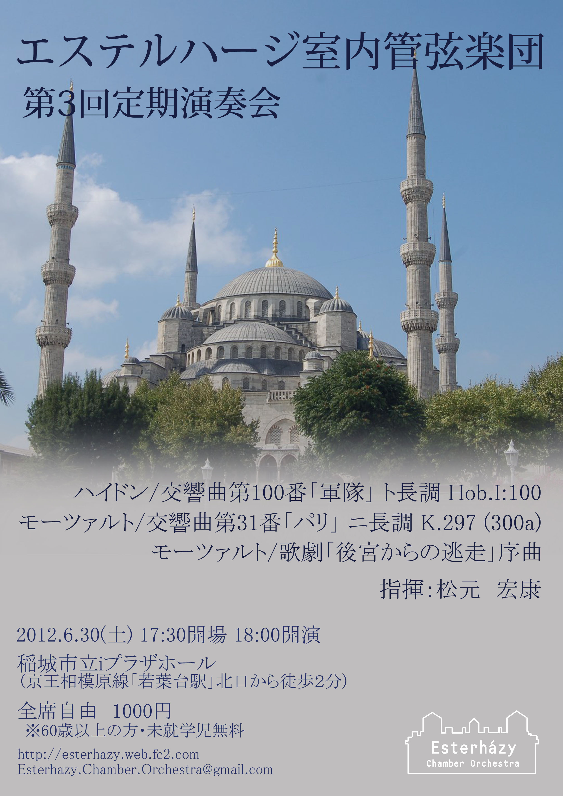
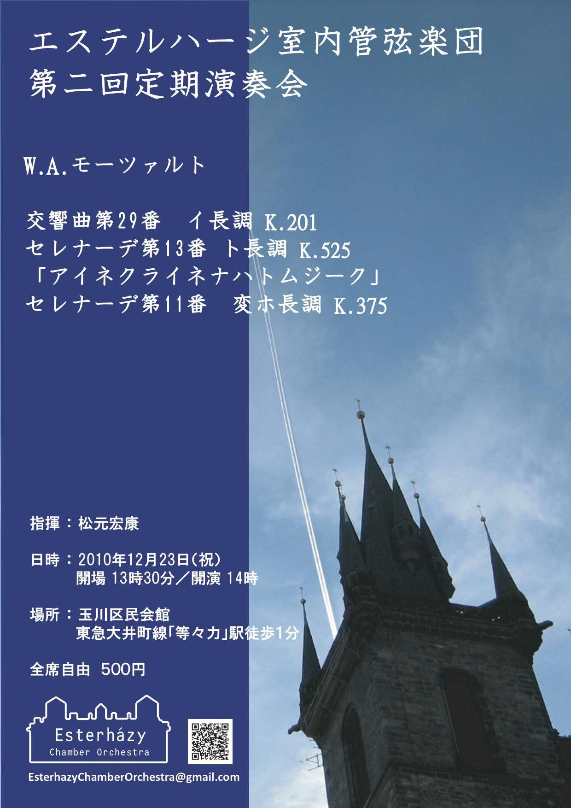

第３回定期演奏会

日時：2012年6月30日(土) 18:00開演(17:30開場)
場所：
稲城市立iプラザ
W.A.モーツァルト／歌劇「後宮からの逃走」序曲 K.384
W.A.モーツァルト／交響曲第31番ニ長調「パリ」 K.297
J.ハイドン／交響曲第100番ト長調「軍隊」 Hob. I:100
指揮：松元 宏康
第２回定期演奏会

日時：2010年12年23日(木・祝) 14:00開演(13:30開場)
場所：玉川区民会館(東急大井町線「等々力駅」徒歩1分)
W.A.モーツァルト／セレナーデ第11番変ホ長調 K.375
W.A.モーツァルト／セレナーデ第13番ト長調 k.525 「アイネ・クライネ・ナハトムジーク」
W.A.モーツァルト／交響曲第29番イ長調 K.201
指揮：松元 宏康
第１回定期演奏会
日時：2010年5年4日(火・祝) 14:00開演(13:30開場)
場所：杜のホールはしもと
W.A.モーツァルト／歌劇「フィガロの結婚」序曲 K.492
J.ハイドン／交響曲第96番「奇蹟」ニ長調 Hob.I:96
W.A.モーツァルト／交響曲第35番「ハフナー」ニ長調 K.385
指揮：松元 宏康